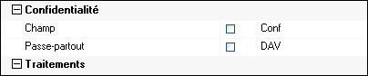

L’ERP permet d’appliquer des confidentialités à des entités, par exemple le dossier.
Lorsque un dossier est confidentiel, seuls les utilisateurs ayant les droits d’accès à ce dossier pourront y accéder.
Cette gestion des confidentialités est également possible avec Divalto Power Search. Elle passe par la gestion des tables confidentielles des RecordSQL correspondants à la description du document concerné. Elle nécessite une mise en oeuvre qui respectent la chronologie stricte des opérations décrites ci-dessous.
Confidentialité des tables
Les propriétés "Confidentialité" d'une table dans le dictionnaire de données permettent de définir le nom du champ (par convention Conf) servant à la gestion de la confidentialité de cette table, ainsi qu'un passe-partout autorisant l'accès à son possesseur.

Option "GlobalConf" des RecordSQL
Voir le détail de cette option
Search_Security.xml
Comme pour la confidentialité des documents, Le fichier paramètres Search_Security.xml doit contenir la correspondance entre le code de confidentialité des champs "conf" des RecordSQL avec un nom de serrure. C'est ce nom de serrure qui sera écrit dans la base Search au moment de l'indexation. Attention : S'il n'y a pas de nom de serrure qui correspondent, le document ne sera pas confidentiel.
Indexation
Lors de l'indexation des documents, pour chaque champ "conf" des différentes tables des RecordSQL qui constitue le document, le moteur écrit dans la base Search le couple (nom de la serrure, passe-partout). Il faut s'assurer avant d'indexer le document concerné que :
Les codes de confidentialité des tables ont bien été mis en place (par exemple la confidentialité du dossier dans l'ERP)
Les correspondances des noms de serrure avec les codes existent dans le fichier Search_Security.xml
Les paramètres du moteur d'indexation sont bien à jour. Pour s'en assurer, on lancera le choix "Relire les paramètres" de la console d'administration du serveur Search.
La suppression des index des documents concernés a bien été effectuée.
La modification d'un passe-partout ou de la valeur d'un code de confidentialité nécessite obligatoirement une réindexation du document.
Recherche
Dans un premier temps s'applique la confidentialité des documents. Si le document est accessible, le moteur Search vérifie ensuite que pour chaque table confidentielle l'utilisateur dispose soit du passe-partout soit du droit d'accès. Le moteur Search ne restitue que les documents pour lesquels tous les accès sont autorisés.